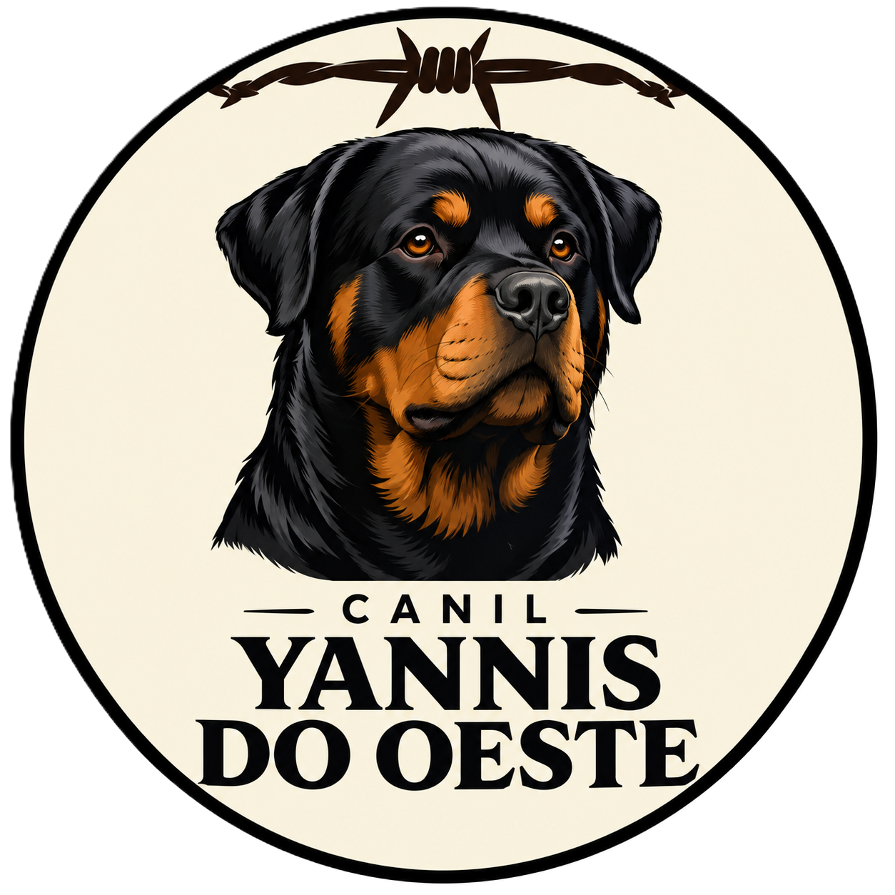

Criação responsável
Um compromisso em cada nova história.

YANNIS DO OESTECRIAÇÃO ESPECIALIZADA EM ROTTWEILERS
Seleção responsável, cuidado diário e paixão pela raça em cada detalhe.
Um compromisso em cada nova história.
Rotina, atenção e respeito.
Estrutura e temperamento.
Além da chegada ao novo lar.
.jpg?width=1500)
O CANIL
Informações oficiais serão incluídas quando disponibilizadas.
NOSSOS ROTTWEILERS
FILHOTES E NINHADAS
Consulte a disponibilidade e planejamentos atuais.
Tenho interesse →GALERIA


CANIL YANNIS DO OESTE
Para informações sobre cães, filhotes ou futuras ninhadas, fale conosco.
Fale pelo WhatsApp →